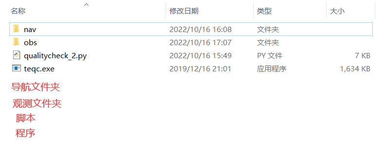

teqc数据质量检查批处理脚本使用手册一、说明二、功能三、运行环境四、参数说明五、使用实例1、命令行输出结果2、文本文件输出六、注意事项1、脚本存在的问题2、注意事项七、脚本代码（qualitycheck_2.py）
qualitycheck_2.py脚本是一个批量进行 RINEX 数据质量分析的脚本，通过在命令行调用 TEQC 程序对输入观测数据处理，质量分析，输出观测时长、信噪比、多路径效应、周跳等质量检查成果。
我们知道TEQC分有qc2lite（该模式下无数据完整率）和qc2full（有数据完整率）两种检核方式。该脚本的功能实现是qc2full处理模式的批处理：即利用观测值文件和导航电文才能实现观测数据质量检查，并输出检查结果。
由于本程序的质量分析操作依赖于 TEQC 程序，但是因不同版本的 TEQC 的输出信息格式有略微不同，本脚本保证只要teqc数据输出形式不变的情况下，在使用 2019 及以后版本的 TEQC 时测试都能通过。
对于 Windows 10、Windows 7 等操作系统，需保证运行脚本的文件夹内有 TEQC 程序，否则可能出现 teqc 不是内部或外部命令，也不是可运行的程序或批处理文件。” 的错误。
该脚本在执行时有四个参数：
xxxxxxxxxx11PS $ python qualitycheck_2.py -nav <folder_name> -obs <folder_name> [-out <format> -fn <filename>]
-nav ：导航电文；<folder_name>导航电文的文件夹名称。
-obs：观测文件；<folder_name>观测数据所在的文件夹名称。
-out：只有在要输出为文本文件时使用；t 或 table 时为表格形式。
-fn：
注意：只有在使用-out后才能使用-fn
数据准备：有观测数据文件夹obs，导航电文文件夹nav；注意：要保证两个文件的文件要一一对应。

| obs | nav |
|---|---|
| bjfs0020.22o | brdc0020.22n |
| bjfs0030.22o | brdc0030.22n |
| bjfs0040.22o | brdc0040.22n |
| ....... | ....... |
xxxxxxxxxx11PS D:\TEQC\obs_check> python qualitycheck_2.py -nav nav -obs obs
xxxxxxxxxx11PS D:\TEQC\obs_check> python qualitycheck_2.py -nav nav -obs obs -out t -fn 20221016result.txt
注意：在当前的文件夹下会生成一个20221016result.txt的文件。
不管采用哪种输出模式，只要脚本顺利运行了，就会产生一系列对应的质量汇总文件(*.S)，这些文件默认在观测值文件夹目录下，若需要进行二次运行脚本需要将这些（*.S）文件移除，否则会报错，甚至得到错误的结果。
-nav就必须要搭配-fn。-fn有默认的文件夹名称，如果-fn后未接文件名，会采用默认的result.txt的文件名
1611#Quality check for RINEX observation files using TEQC software.2#python3.83#lijun4import argparse5import os,sys6import glob7from concurrent import futures8import datetime9import subprocess10check_information = \12(13{'name': 'start', 'flag': 'Time of start of window :', 'pos': slice(25, 51)},14{'name': 'end', 'flag': 'Time of end of window :', 'pos': slice(37, 51)},15{'name': 'length', 'flag': 'Time line window length :', 'pos': slice(26, 42)},16{'name': 'MP1', 'flag': 'Moving average MP12 :', 'pos': slice(26, 32)},17{'name': 'MP2', 'flag': 'Moving average MP21 :', 'pos': slice(26, 32)},18{'name': 'SN1', 'flag': 'Mean S1 :', 'pos': slice(26, 31)},19{'name': 'SN2', 'flag': 'Mean S2 :', 'pos': slice(26, 31)}20)21#slice(start,end)从已有数组中返回选定的元素，返回一个新数组，包含从start到end（不包含该元素）的数组元素22# 定义命令行中的参数23def get_args():24parser = argparse.ArgumentParser(description="quality check of using TEQC") #创建解释器-创建ArgumentParser()的对象parser25parser.add_argument('-nav',type=str,metavar='<nav_files>', #通过add_argument添加参数nav26default='',help="Navigation files for complete mode")27parser.add_argument('-obs',type=str,metavar='<obs_files>', #通过add_argument添加参数obs28default='', help="Observition files for complete mode" )29parser.add_argument('-out',metavar='<format>', #通过add_argument添加参数out30choices=['table','t'],help="Out format to txt or screen")31parser.add_argument('-fn',type=str,metavar='<filename>', #通过add_argument添加参数fn32default='result.txt',help="Custom file name")33args=parser.parse_args() #命令行参数解析parser.parse_args()34return args35#根据返回的参数获取文件并遍历存储37def get_files():38global count # 定义局部的全局变量39args = get_args()40nav_fn, obs_fn = args.nav, args.obs # 获取文件夹名称42out_format, out_fn = args.out, args.fn # 获取输出形式和文件名43path = os.getcwd()45path_nav = os.path.join( path,nav_fn ) # 将当前路径与文件夹拼接（如'D:\\PycharmProjects\\nav'）46path_obs = os.path.join( path,obs_fn )47filename_nav=os.listdir(path_nav) # 遍历文件夹下的文件,存储为列表49filename_obs=os.listdir (path_obs)50obs_count = len(filename_obs) # 获取文件数量52nav_count = len(filename_nav)53#异常处理54try:55if obs_count == nav_count:56count=obs_count57except:58print ( "|-----Tips:The number of obs does not equal the number of nav-----|\n"59"|-----The process is about to terminate----|" )60sys.exit ( 0 )61return nav_fn,obs_fn,filename_nav,filename_obs,count,out_format,out_fn63#65def quality_check(nav_file,obs_file):66args='teqc','+qc','-nav',nav_file,obs_file67status,output=subprocess.getstatusoutput(' '.join(args))68#print('status=',status)69#print('output=',output)70if status > 0:71out = None72else:73out = output.split('\n')74return out75def parallel_teqc():78nav_fn,obs_fn,nav_file0, obs_file0, num, out_fmt,out_fn0=get_files ()79#nav_fn,obs_fn文件夹名（brdc，bjfs）；nav_file, obs_file文件名(1.11n,1.11o)80if out_fmt in ['t','table']:81f=open ( out_fn0, mode='a+', encoding='utf-8' )82header=print_header ()83f.write (header+'\n')84f.close ()85else:86print ( 'num=', num )87print ( print_header () )88# 线程池中创建最多执行1个线程，同时通过ThreadPoolExecutor来生成一个executor对象89with futures.ThreadPoolExecutor(max_workers=1) as executor:90for i in range(num):92# 路径拼接(如：obs/bfdc1530.11n)93path_nav_file=nav_fn+'/'+nav_file0[i]94path_obs_file=obs_fn+'/'+obs_file0[i]95# 调用executor对象的submit方法，提交1个任务96future = executor.submit(quality_check,path_nav_file,path_obs_file)97# 调用Future对象的result方法，返回被执行函数的结果98res=future.result ()99if res:100record=parse_report(res)101results=str(obs_file0[i])+str(record)102res_0=results.replace("('",' ').replace("', '",' ').replace("', ",' ').replace(", '",' ')103res=res_0.replace(' ',' ').replace("')",'\n')104if out_fmt in ['t','table']:106f=open ( out_fn0, mode='a+', encoding='utf-8' )107f.write ( res )108f.close ()109else:110print ( res )111# 从报表中获取需要的参数113def parse_report(report):114marks = {}115for item in check_information:116for line in report:117if item['flag'] in line:118marks[item['name']] = line[item['pos']].strip()119break120# 获取字典中对应键的值122sn1 = format(float(marks.get('SN1', 'nan')),'.2f')123sn2 = format(float(marks.get('SN2', 'nan')),'.2f')124mp1 = format(float(marks.get('MP1', 'nan')),'.2f')125mp2 = format(float(marks.get('MP2', 'nan')),'.2f')126date = datetime.datetime.strptime(marks['start'][0:11], '%Y %b %d')127start = marks['start'][11:].strip()128end = marks['end']129last_line = next(l for l in reversed(report) if l.startswith('SUM'))131last_line_pieces = last_line.split()132length = float(last_line_pieces[-8])133# Get the percentage of data, maybe unknown135percentage = last_line_pieces[-4]136if percentage == '-':137percentage = float('nan')138else:139percentage = format(float(percentage),'.2f')140# Get CSR from the last line of report, the olps may equal 0142olps =round(float(last_line_pieces[-1]),0)143if olps == 0:144csr = float ( 'nan' )145else:146csr = format(1000 / olps,'.3f')147result = (date.strftime('%Y-%m-%d'), start, end, length, percentage, sn1,148sn2, mp1, mp2, olps, csr)149return result150# 打印表头152def print_header():153header=('file', 'date', 'start', 'end', 'hours', 'percent',154'SN1', 'SN2', 'MP1', 'MP2', 'olsp' ,'CSR')155style=('\n{0: ^14s} {1: ^12s} {2: ^14s} {3: ^14s} {4: >6s} {5: >7s}'156'{6: >6s} {7: >6s} {8: >6s} {9: >5s} {10: >5s} {11: >5s}')157format=style.format ( *header )158return format159if __name__ == '__main__':161parallel_teqc()